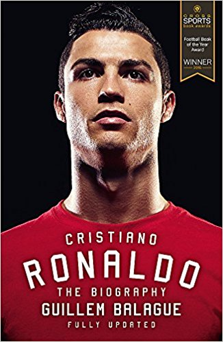

What makes the modern manager tick? How does the pressure of a budget of millions affect a person? What's left of a man when his job of years is taken away instantly? This fascinating insight into leading football managers' lives reveals precisely what things are like at the epicentre of the chaos that is our favoured game. A collection of portraits are neatly interwoven as some of the leading helmsmen in English club football talk candidly about their route to the top, the day-to-day and what they stand for in one-to-one interviews with the author. Among the men featured are Alan Pardew, Garry Monk, Mark Hughes, England U21 caretaker coach Aidy Boothroyd and that great hope of the English coaching fraternity, Eddie Howe.
Download

Cristiano Ronaldo is one of the greatest footballers of all time, a dream he pursued from the age of just twelve when he left his humble origins on Madeira behind. It wasn't long before he had the biggest clubs in Europe knocking on his door, but it was Manchester United who won the race for his signature. Under the tutelage of Sir Alex Ferguson, Ronaldo developed into the complete footballer and athlete, winning three league titles and a Champions League along the way. He then became the biggest galáctico of them all when he transferred to Real Madrid for a record-breaking fee. However, he has endured a difficult relationship with managers, teammates and the fans - and his time at the club has often been overshadowed by his fierce rivalry with Barcelona and Lionel Messi. Guillem Balagué, respected football journalist and expert on the Spanish game, provides the definitive account of what has made Ronaldo the player and man that he is today.
DownloadWhen Arsene Wenger arrived at Arsenal in 1996, he was little known to fans at the club and many doubted he could bring back the glory days of George Graham. But soon he was transforming the way the team played, melding the famous English defensive spine of Tony Adams, Martin Keown, Lee Dixon, Nigel Winterburn and David Seaman with a hugely creative foreign attacking spirit, epitomised by Dennis Bergkamp, Thierry Henry and Robert Pires, that could both outplay and outmuscle their rivals. At the same time, he introduced new ideas on diet, exercise, training and tactics, which many players believe extended their careers. Having won numerous trophies, and led the Invincibles to an unprecedented unbeaten league season in 2003-04, Wenger then had to help the Gunners through the next stage of their development when they moved from Highbury to the Emirates Stadium, a move that was followed by a nine-year trophy drought. Despite the financial constraints he faced, he still managed to keep the club playing in the Champions League year after year while remaining true to his philosophy of how the game should be played. Some began to question whether he had been left behind, despite picking up back-to-back FA Cups in 2014 and 2015, and from some quarters calls grew for him to retire, though in May 2017 he signed another two-year deal to stay at the club.
DownloadOne of modern football’s most brilliant players - and one of its most iconic and mysterious figures - Zinedine Zidane’s football career is the stuff of legend. A World Cup-winner with France, he became the world's most expensive player in 2001 when he moved from Juventus to Real Madrid for £46million, where his exceptional talent earned him a reputation as one of the greatest players of all-time. His playing career concluded explosively when he retired after being sent off for head-butting Marco Materazzi in the 2006 World Cup final.But his football career was far from over. After a spell coaching in Spain, he was appointed manager of Real Madrid in 2015 and immediately demonstrated that his skill as a manager matched his talent on the pitch, leading the team to successive Champions League victories and establishing him as one of the new managerial greats.
Download© 2018 Football news